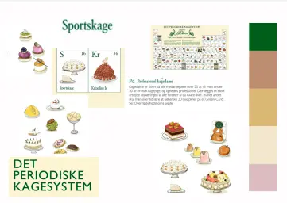
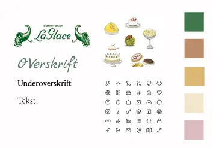
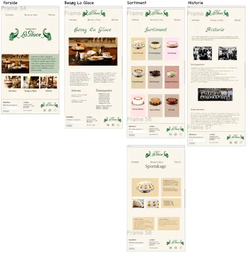
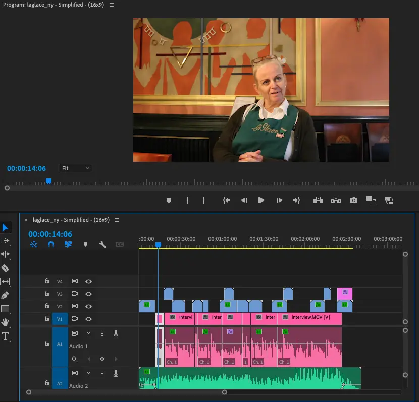

Portfolio
Grundlæggende Indhold
I grundlæggende indhold startede vi med vores første gruppearbejde. Vi lavede 2 opgaver: Et videosite hvor vi var sammen i grupper af 2, samt den sidste opgave, som var et case arbejde, hvor vi skulle lave et virksomhedssite af en valgfri virksomhed. Denne virksomhed skulle vi selv kontakte, og vi skulle arbejde i grupper af 4.
Videosite
Vi startede dette tema med en mindre opgave, hvor vi lærte om videoproduktion, herunder præproduktion, optagelse og postproduktion. Vi skulle lære at filme og optage ekstern lyd. Dette skulle til sidst redigeres i Adobe Premiere pro og Audition.
VideositeVirksomhedssite
Virksomhedssitet var vores første introduktion til case-arbejde og et større gruppeprojekt. .
Vi skulle i dette projekt selv udvælge og kontakte en virksomhed, hvis hjemmeside vi ville lave et redesign af. Min gruppe kontaktede La Glace og vi skulle derfor researche hvordan vi ville redesigne deres eksisterende site. Her brugte vi interview og desktop research til at finde ud af, hvordan vi skulle formidle indholdet, der skulle være med i vores redesign.
Vores moodboard blev vores udgangspunkt fremadrettet, og vi blev som gruppe enige om, at vi gerne ville beholde La Glace ånd, men give den et moderne pift.
Fordi vi gerne ville beholde den traditionelle følelse og historien, som La Glace har, endte vi med at lave et simpelt styletile, med skrifttyper der mindede meget om de originale. Dog ville vi have andre farver og et nyt og mere luftigt design.
Vi fik lavet denne prototype, hvor vi har fået implementeret følgende; det luftige design, de nye farver og stadig bibeholdt tradition og hygge.
I dette forløb var der stor fokus på indholdet, derfor er nærmest alt visuelt noget vi selv har produceret, både billeder og video.
Vi har i dette forløb lært at bruge Adobe Premiere pro, hvor vi har redigeret en video med et interview og en montage.
Virksomhedssite